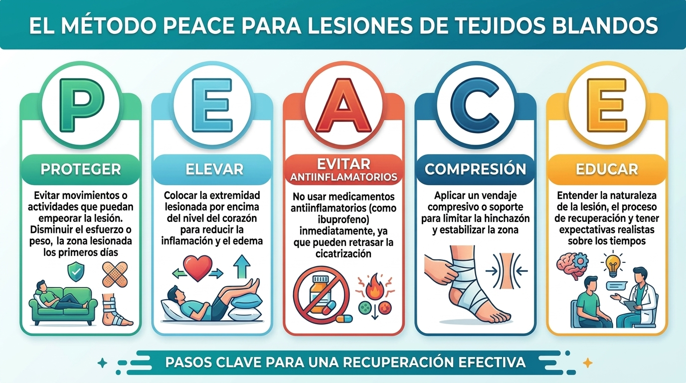
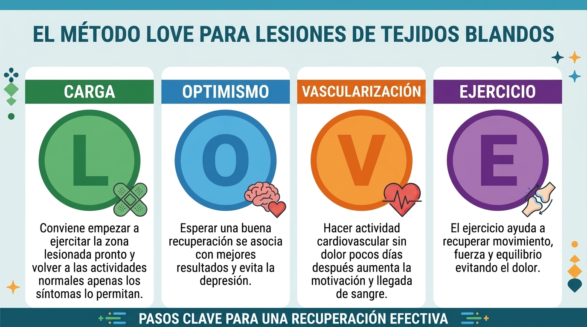

1. ¿Qué debemos hacer cuando ocurre una lesión?
Lo primero es detener la actividad deportiva y valorar cómo se siente la zona lesionada. No se debe continuar jugando si hay dolor o dificultad para realizar movimientos, ya que esto podría empeorar la lesión.
Señales de alerta
- Dolor intenso o que aumenta con el movimiento.
- Hinchazón importante.
- Dificultad o imposibilidad para apoyar el pie y caminar.
- Sensación de inestabilidad o deformidad en la zona afectada.
Si se presenta alguna de estas señales, es importante buscar valoración de un profesional de salud para determinar cómo proceder.
2. ¿Cómo podemos cuidar la lesión durante los primeros días?
El método PEACE reúne cinco recomendaciones para el cuidado inicial de las lesiones de músculos, tendones y ligamentos:

Limitar los movimientos que producen dolor durante los primeros 1 a 3 días. Esto ayuda a evitar que la lesión empeore, sin mantener un reposo prolongado.
Mantener la zona lesionada elevada, preferiblemente por encima del nivel del corazón, para ayudar a controlar la hinchazón.
No utilizar medicamentos antiinflamatorios por cuenta propia. La inflamación forma parte del proceso natural de recuperación.
Utilizar un vendaje para ayudar a controlar la hinchazón. Debe colocarse sin apretar demasiado, evitando molestias o alteraciones en la circulación.
Conocer la lesión y comprender el proceso de recuperación. Es importante respetar los tiempos necesarios y evitar regresar al deporte antes de estar preparado.
3. ¿Cómo continuar con la recuperación?
Después de los primeros días, se puede aplicar el método LOVE, que promueve una recuperación activa mediante el movimiento y el ejercicio progresivo:

Retomar poco a poco los movimientos y actividades, según lo permitan los síntomas. La carga debe aumentar de forma gradual.
Mantener una actitud positiva y confianza en la recuperación. El miedo y las expectativas negativas pueden influir en el proceso.
Realizar actividad cardiovascular que no provoque dolor, como caminar o utilizar una bicicleta estacionaria, según las posibilidades de cada persona.
Incorporar ejercicios de movilidad, fuerza y equilibrio para recuperar la función de la zona lesionada.
4. ¿Cuándo podemos volver a jugar?
Poder caminar o sentir menos dolor no significa que la lesión esté completamente recuperada. Antes de regresar al fútbol, es importante valorar diferentes aspectos:
- Dolor: que sea mínimo o inexistente durante las actividades deportivas.
- Movilidad y fuerza: recuperar el movimiento y la fuerza necesarios para realizar las actividades habituales.
- Confianza: sentirse segura al utilizar la zona lesionada, sin temor a volver a lastimarse.
- Equilibrio y control: mantener la estabilidad y controlar los movimientos del cuerpo.
- Rendimiento deportivo: poder realizar acciones propias del fútbol, como correr, saltar, frenar y cambiar de dirección.
La vuelta al deporte debe ser progresiva y tomar en cuenta la recuperación de cada jugadora.
5. ¿Cómo evitar nuevas lesiones?
Después de una lesión, es importante mantener medidas que ayuden a reducir el riesgo de volver a lastimarse. Algunas recomendaciones son:
- Realizar ejercicios de fuerza, equilibrio y control del movimiento.
- Utilizar vendajes o soportes cuando estén indicados.
- Completar el proceso de recuperación antes de regresar a los entrenamientos y partidos.
- Aumentar progresivamente la intensidad de la actividad deportiva.
Atender una lesión desde el primer momento y respetar el proceso de recuperación ayuda a evitar complicaciones y disminuir el riesgo de nuevas lesiones.
Inicio / Primeros minutos tras una lesión